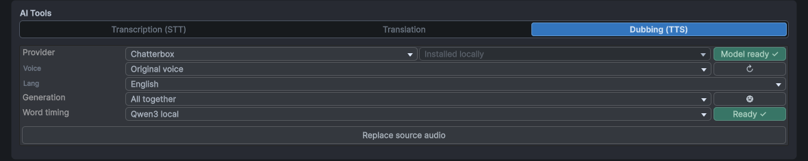
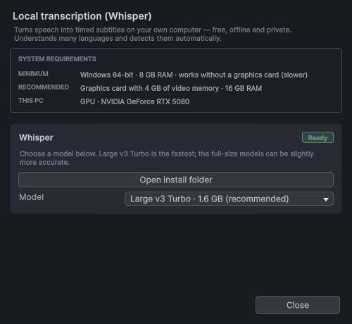
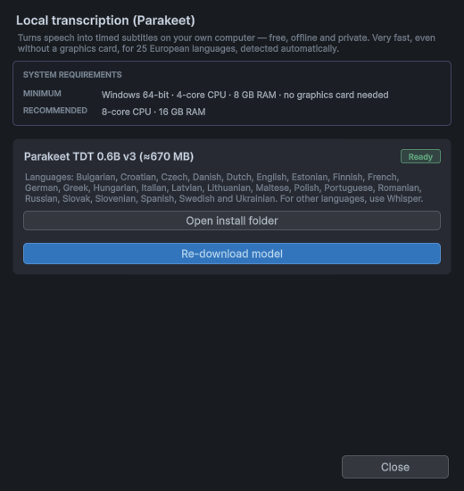
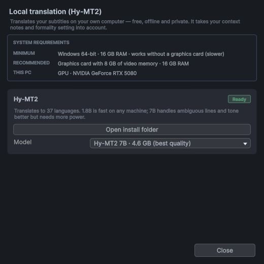
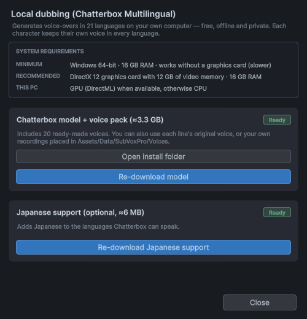

SubVox Pro
SubVox Pro 可直接在 Unity 中将语音台词转换为同步字幕和配音：
- 将音频剪辑转写为带时间信息的字幕——可通过云服务或完全离线完成。
- 在波形上编辑时间信息、设置词语样式、检查字幕阅读速度。
- 翻译成 50 种语言，并通过语音合成进行配音，也可选择使用每个角色自己的声音。
- 只需几个组件即可在游戏中播放所有内容，通过台词触发游戏事件，并将台词拖放到 Unity Timeline 上。
目录
- 开始之前
- 快速入门
- SubVox Pro 窗口
- 转写
- 翻译
- 使用语音合成进行配音
- 说话者与配音风格预设
- 编辑音频
- 在游戏中播放语音台词
- 通过语音台词触发游戏事件
- Unity Timeline
- 批量处理文件
- 与 AI 助手协作
- 离线引擎（无需账户，无需 API key）
- 通过 Google Sheets 进行人工翻译
- 设置
- 键盘和鼠标
- 支持的语言
- 你的数据和在线服务
- 在游戏中使用 AI 生成的声音
- 文件存储位置
- 更新与卸载
- 故障排除
- 支持
如何为每项服务获取账户和 API key，请参阅 提供商设置中的分步说明。
开始之前
- Unity 2022.3 LTS 或更高版本（包括 Unity 6），支持任何渲染管线（Built-in、URP、HDRP）。
- TextMesh Pro——如果项目尚未导入 TMP Essentials，请先导入一次。在 Unity 2022.3 中，先通过 Package Manager 安装 TextMeshPro 包（Unity 6 已自带该包）。
- Unity Timeline 为可选：安装该包后，Timeline 功能会立即显示。
- 在游戏中，SubVox Pro 可在 Unity 支持的所有平台上运行。
- 在编辑器中，SubVox Pro 已在 Windows 上经过测试。使用你自己的 API keys 的云服务应该也能在 macOS 和 Linux 编辑器中运行，但尚未在这些平台上测试。离线引擎（无需任何账户即可进行转写、翻译和配音）需要使用 Windows 编辑器。
快速入门
只需几分钟，即可将一个音频剪辑转换为屏幕上的同步字幕。
SubVox Pro 的所有功能也都可通过 Tools ▸ SubVox Pro ▸ Hub 一键访问：这个由功能卡片组成的窗口可打开台词资源编辑器、批量处理、Google Sheets、提供商比较、附加的离线模型、示例场景、文档、提供商设置指南和设置。主界面有九张功能卡片。点击 Documentation 会打开第二个界面，其中仅包含 Online（指南、提供商指南及脚本参考，带英语/法语语言选择器）和 Local（英文 PDF，可离线使用）。点击 Back 可返回主界面；点击 Provider Setup 会直接打开同一份 PDF 的提供商设置部分。


1. 选择转写方式。可以在 Tools ▸ SubVox Pro ▸ Settings 中粘贴语音识别服务的 API key（如何获取），或者在 Windows 上使用 Whisper 或 Parakeet，这两款工具均可免费离线运行（首次使用时会提示下载模型）。
2. 创建台词资源。选择 Assets ▸ Create ▸ SubVox Pro ▸ Voice Line，选中该资源，然后在 Inspector 中点击 Set Up Voice Line。 SubVox Pro 窗口将打开并显示新的台词资源：检查其 Language（首次使用时为英语，之后为上次选择的语言），选择 Add an audio track 并选取音频剪辑，或录制一段音频。
或者，在 Project 窗口中右键单击音频文件，然后选择 SubVox Pro ▸ Set Up Voice Line。选择新台词资源的保存位置；编辑器随即打开，并已关联该音频。

3. 转写。在 AI Tools ▸ Transcription 中，选择提供商和音频中使用的语言，点击 Analyze，然后点击 Split。字幕将显示在波形上。
4. 调整。拖动波形上的标记，修正下方列表中的文本，按 Space 收听。
5. 在游戏中显示字幕。将 [SubVox Pro] 和 Subtitle Displayer 预制体（SubVoxPro/Prefabs）拖放到场景中，然后播放该台词：
using SubVoxPro;
SubVox.Play(myVoiceLine);
想先看看运行效果吗？在 Hub 中打开 Examples（或通过 Tools ▸ SubVox Pro ▸ Example Scenes）：三个现成的场景——3D 寺庙、2D 霓虹车站和黑色电影风格的视觉小说——包含四种语言的语音台词、对话气泡、对话序列、语音事件和字幕选项。只需点击 Play。
SubVox Pro 窗口

通过 Tools ▸ SubVox Pro ▸ Voice Line Editor 打开窗口，或在台词资源的 Inspector 中点击 Set Up Voice Line。从上到下依次为：
- Voice Line Data——正在编辑的台词资源，包含创建新资源、浏览其他资源、拆分及删除的按钮。彩色圆点是显示在 Project 窗口中资源图标上的标签，用于整理台词资源。
- Source——AUDIO 和 SUBTITLES 选择器。每个台词资源有一种源语言（旗帜图标；点击可更改），每种翻译或配音语言各有一条轨道。这两个选择器相互独立，因此可以一边收听英语音频，一边阅读法语字幕。
- AI Tools——转写、翻译和配音（见下文）。
- Timeline——带有字幕标记的波形图。每个标记代表一条字幕的起始位置；没有文本的标记会清除屏幕上的字幕（称为空白标记）。
- 实时预览——播放头所在位置的字幕，显示效果与游戏中一致。在上方选择颜色或样式，然后在词语上拖动以应用颜色或样式（按住鼠标右键拖动可擦除）。
- Subtitles——每行对应一条字幕：包含名称、时长、说话者和文本，并配有播放按钮。
标签和语言
点击 Voice Line Data 旁边的标签，可选择颜色和形状。点击 Clear tag 可移除标签。形状有助于区分台词资源，无需仅依赖颜色。点击 A-Z 或 0-9，可使用字母或数字作为形状。

点击源语言旗帜图标以选择音频中使用的语言。旗帜用于标识语言，而非说话者的国籍；选择器会显示语言名称和代码，因此不必靠辨认旗帜来选择语言。

无音频起步

台词资源可以从文本开始，而不使用音频：选择 Add a subtitles track，然后导入一个 .srt 文件（带时间信息的字幕）、一个 .txt 文件（每行一条字幕，按适宜的阅读速度自动设置时间），或手动输入字幕文本。设置台词资源的 Length；在添加音频或根据文本生成配音之前，该台词资源在游戏中会按此时长播放。
录制音频

Record with a microphone（位于 Add an audio track 或 AUDIO 选择器旁的 + 菜单中）会打开一个小型录音窗口：选择麦克风，观察音量电平，开始录音，回放试听，然后点击 Use recording。录制的音频会保存为 WAV 文件，存放在台词资源所在的文件夹中。在 macOS 上，请在系统设置中允许 Unity 使用麦克风。
检查字幕
- Show CPS（位于 Settings）会显示每条字幕的阅读速度，并标记阅读速度过快的字幕。
- Check Subtitles（与 Show CPS 一起显示）会逐项引导你处理所有问题，包括名称为空或重复、字幕超出音频剪辑范围、字幕时间重叠和字幕阅读速度过快，并提供一键修复功能。所有操作均可撤销。
- Auto blanks 会在无人说话时隐藏字幕，且不添加标记。在弹出窗口中开启该功能，并调整触发隐藏所需的静音段时长；隐藏的部分会在波形上以阴影显示。
- Export SRT 将字幕保存为
.srt文件。

Silence 设置停顿处的音量需要比说话时低多少；Min pause 忽略非常短的停顿。 Hold out 在语音停止后短暂保留字幕，而 Lead in 则在语音恢复前提前显示字幕。 Only between two lines 可防止字幕在句子中间消失并重新出现。
删除台词资源
垃圾桶按钮可删除台词资源。它会列出与该台词资源相关的文件：SubVox Pro 生成的文件（配音、录音）会被选中，你自己的文件则不会被选中，而在其他地方仍被使用的文件会被锁定。所有删除的文件都会被移至系统回收站，因此可以恢复。
拆分台词资源
当一个台词资源包含多个需要单独播放的片段时，拆分按钮（位于垃圾桶旁边）会将其拆分为多个台词资源。点击两条字幕之间的位置以添加拆分点，根据需要添加任意数量的拆分点，并为新的台词资源命名。拆分点始终位于两条字幕之间，即它们之间的停顿处。
每个部分都会保留属于其字幕的所有内容：音频、翻译、配音、说话者、音频效果和事件。第一个部分仍保留在当前台词资源中，因此场景和 Timeline 仍引用该资源；其余部分会创建在该台词资源旁边。每个部分都有自己的音频文件，且原始文件会被保留。拆分操作无法撤销。
转写

- 选择一个 Provider；如果该提供商提供多个模型，再选择一个 Model。右侧的状态徽标会显示其是否已就绪（已设置密钥或已下载模型）。
- 设置 Audio Language（部分提供商会自动检测）。
- 点击 Analyze：音频将转换为带时间信息的词。
- 点击 Split：词将被组织为字幕。Split settings 用于设定单条字幕的最长时长、字幕比第一个词的发声时间提前多久显示，以及字幕是否应在标点符号处结束。
Word timing 用于选择每个词的时间信息来源：From the provider（默认）保留转写返回的时间信息；Qwen3 aligner (local) 会在 Split 后立即重新确定每个词在音频中的时间位置，且不更改文本——这是逐词显示字幕最精确的选项（安装一次即可）。对于 Qwen3 不支持的语言，将保留提供商的时间信息。
提供商：AssemblyAI、Gladia、Deepgram、Speechmatics、ElevenLabs、Rev AI、OpenAI，或离线的 Whisper 和 Parakeet。不确定该选哪个？Tools ▸ SubVox Pro ▸ Provider Comparison 可将它们并列展示，方便比较价格、免费套餐、商业使用和支持的语言。

提示： OpenAI 的 gpt-transcribe 返回的文本不包含词级时间戳；时间信息是在整个音频剪辑范围内估算的。对时间定位有要求时，请使用本地对齐功能或提供词级时间戳的提供商。
转写使用 AUDIO 选择器中选定的音频，因此也可以转写配音。
翻译

- 选择一个 Provider：DeepL、Google Translate、OpenAI、Claude、Gemini、DeepSeek 或离线的 Hy-MT2。
- 勾选一种或多种 Target 语言，或选择一个 preset，以一次性生成多个语言版本。
- 如果该语言区分正式或非正式的“你”，设置 Formality。
- 点击 Translate。每种语言都会生成独立的字幕轨；可通过 SUBTITLES 选择器在它们之间切换。

在 Target 弹出窗口中，在左侧勾选任意数量的语言，然后在右侧点击 Save as preset，以便重复使用。选择一个预设可一次性翻译为该预设包含的所有语言；右侧栏可编辑其名称和语言列表。
辅助翻译。提供上下文有助于改善含义不明确的台词的翻译效果：为整个台词资源填写整体上下文（通过对话气泡按钮）；如有需要，还可为单条字幕添加备注（通过列表中该字幕的对话气泡按钮）。
保持翻译同步。在翻译后修改源字幕时，对应译文会显示 OUT 状态徽标：点击 Synchronize 仅重新翻译已更改的字幕，也可以在检查该字幕后点击此徽标。移动标记后，句子的切分位置发生变化时，译文字幕会显示 CUT 状态徽标： Fix splits 会请求 AI 提供商在译文中与原文含义相对应的位置重新切分，且不改变译文中的词。配音会自动随之调整。
使用语音合成进行配音

- 在 SUBTITLES 选择器中选择配音语言。
- 在 AI Tools ▸ Dubbing 中，选择一个 Provider 和一个 Voice。音色旁边的 ▶ 按钮可播放示例音频。 Use speakers' voices 让每条字幕使用其说话者的音色。
- 选择 Generation 模式：
- Each subtitle — 每条字幕单独生成一段音频：最便于逐条修改；
- Per speaker — 同一角色的每组字幕一起生成一段音频：语流更自然；
- All together — 一次生成一段连续音频：最自然，但所有内容会一起重新生成；
- Groups — 自行选择哪些词在同一段音频中生成（见下文）。
- 点击 Generate audio。配音将生成一条新的音轨，当该语言处于活动状态时，该音轨将取代原始音轨播放。
Groups 模式。选择 Groups 会启用波形上方的 Groups 工具。每个组的内容会生成一段音频，采用该组第一个词的音色和配音风格预设，字幕文本也会显示为该组的颜色。起初，所有内容都包含在一个组中。在组内拖动可将其拆分为三个组，新组位于中间：组的起点或终点可以位于一条字幕的中间，每个新组都有自己的颜色。拖动两个组之间的边界可移动边界：将边界推过整个组会删除该组，在松开前拖回则会恢复该组。右键点击一个组可将其删除，相邻的组会取代它。垃圾桶按钮可将所有内容重新合并为一个组。分组设置按字幕语言分别保存。
提供商：InWorld、ElevenLabs、Gemini、OpenAI、Google Cloud、Azure，以及离线版 Kokoro（英语）和 Chatterbox（21 种语言，保留每个角色的声音），此外还有 Qwen3 TTS 1.7B（10 种语言，支持参考音频克隆、固定音色和音色设计）以及 VoxCPM2（30 种语言，支持通过文字控制风格的参考音频克隆，以及音色设计）。
- Word timing — Qwen3 aligner (local) 使词在被说出的准确时刻显示（只需安装一次）；Estimated 将每条字幕中各词的显示时间均匀分配到该字幕的时长内；如果不采用逐词显示，None 仅保留字幕的时间信息。安装对齐器后，默认使用 Qwen3 aligner；安装前则默认使用 None。
- Voice direction — 对于支持配音指导的提供商，音色旁边的对话气泡按钮可用于指定演绎的语气（例如 平静、低语）。
- REGEN — 当某条字幕的配音不再匹配（文本、音色或配音风格预设发生变化）时，该条目上会出现橙色的 REGEN 状态徽标。将鼠标悬停在徽标上可查看原因，点击它即可仅重新生成所需部分。
- 声音克隆 — 使用 ElevenLabs（付费套餐）、Chatterbox、Qwen Base 或 VoxCPM2 时，选择 Original voice 可使用从源音频克隆的声音，让每个角色用自己的声音配音。还可以从数据文件夹中
Voices文件夹内的音频片段克隆声音。仅克隆有权使用的声音。
OpenAI 及其他部分服务要求告知玩家这些声音是由 AI 生成的，参阅 Provider Setup。
说话者与配音风格预设
说话者

说话者代表一个角色：其名称会以专属颜色显示在字幕前，并保存用于配音的音色。通过 Assets ▸ Create ▸ SubVox Pro ▸ Speaker 或窗口中的说话者选择器创建说话者资源。
- 在列表上方的 Speaker 字段中设置整个台词资源的说话者，或在单条字幕所在的行中设置该字幕的说话者。
- 在说话者的 Inspector 中，通过 Text-to-speech voices 按提供商设置音色，设置适用于所有语言的备用音色，并可按语言单独覆盖。
- 在 Subtitle Displayer（或 Subtitle Document Displayer）中，Speaker Name Mode 可将名称显示在字幕前（Inline）、字幕上方（Above），或隐藏名称（Hidden）。说话者还可以有自己的字体：Subtitle Displayer 使用 Font (TextMeshPro)，Subtitle Document Displayer 使用 Font (UI Toolkit)。
- Keep Background Between Subtitles 在两条字幕之间的空白时段仅保留字幕面板。该功能默认开启；第一条字幕之前或最后一条字幕之后的空白时段仍会隐藏面板。

说话者选择器按性别对角色进行分组。点击铅笔图标可编辑现有说话者；New speaker 可创建新的说话者资源。设置单条字幕的说话者覆盖项时，选择顶部选项可恢复为该台词资源的默认说话者。
配音风格预设
配音风格预设是一组可复用的表演指导，例如 愤怒、神秘、低语……可以在说话者资源中通过 New personality 创建，也可以通过 Assets ▸ Create ▸ SubVox Pro ▸ Voice Personality 创建。随后可自行编写配音指导，或组合情绪和说话方式，设置各自的强度，再设置语速、音量、音高和咬字方式。点击其图标可从约 40 种符号（情绪、心境、声音和角色）中选择一种，以便在列表中一眼识别。
通过列表中每条字幕的标签为其指定配音风格预设（在 Each subtitle 模式下），或使用说话者的默认预设。各提供商会以自己支持的形式应用能够处理的设置，例如文字形式的配音指导、音频标签或说话风格；有些提供商仅遵循语速与节奏设置。标签的工具提示会说明所选音色将采用哪些设置。配音风格预设决定台词的演绎方式，而非由谁说话：声音的年龄特征应在声音描述中指定（见下文）。
编辑音频
时间轴工具栏右侧的按钮用于编辑音频本身。每次编辑操作均可通过 Ctrl+Z 撤销。

点击 Audio effects 按钮可打开效果列表。已应用的效果会优先显示；选择其中一项进行编辑，或点击其叉号图标重置并移除该效果。
- Crop — 拖动起始和结束手柄，然后点击 Apply crop。此操作会重写源音频文件，因此，如果之后可能还需要完整的录音，请保留一份副本。
- Insert a pause / remove a segment（
|↔|按钮）— 按住鼠标左键拖动以插入静音段，按住鼠标右键拖动以删除部分内容。其后的字幕、词和事件会随音频移动。当 TTS 语音把两句话连在一起读时，此功能非常实用。 - Audio effects — 音量曲线、淡入淡出、音量归一化、压缩器、限幅器、噪声门、滤波器、均衡器、电话/无线电效果、音高、语调、声像、距离衰减闷化、房间混响。在时间轴上绘制效果的作用位置，通过滑块设置作用方式，然后点击 Apply effects。曲线角落的磁铁图标可使控制点与基准值、0 及相邻控制点对齐（按住 Alt 键可自由放置控制点）。SubVox Pro 会保留原始音频，因此效果仍可编辑； Flatten 会使效果永久生效，Discard 则会清除所有效果。
- Voice filter — 一键改变整段语音：Telephone（电话）、Radio / walkie-talkie（带底噪和静噪提示音的对讲机）、Robot（机器人）、Cathedral（大教堂）、Behind a door（门后）、Monster（怪物）或 Inner voice（内心独白）。在 Filter 下拉菜单中选择滤镜，并通过 Intensity 设置强度。滤镜默认作用于整条台词；降低其曲线即可让部分台词保持不变。Cathedral 会在每个词之后持续回响，但会在片段结尾淡出：在最后一个词之后留一小段静音，即可听到其回声。
- Intonation — 顶部显示语音的音高变化；在下方轨道中绘制要升高（+）或降低（−）的幅度，其中 0 表示保持不变。磁铁图标会按旁边设置的步长吸附绘制轨迹（默认为 0.5 st；按住 Alt 键可自由绘制），而波浪图标会在设定的时长内平滑处理新绘制的轨迹（0 表示精确保留绘制的轨迹）。按住鼠标右键拖动可恢复原始语音，Esc 键可取消当前绘制的轨迹。台词的其余部分保持不变。 Pitch 会整体调整一段音频的音高，并显示相同的语音音高变化。这两种方式都能保持声音自然；调整几个半音（st）效果最佳。Engine 下拉菜单提供 WORLD（自然，默认）、PSOLA（更轻量）或 Classic（最快；同时也会改变声音的特性）。

上方的音量曲线仅降低所选片段的音量。波形让时间位置清晰可见，控制点用于调整增益；0 dB 保持原始音量不变。

在 Intonation 中，上方的曲线显示检测到的语音音高变化。下方轨道显示所做的修改，单位为半音：正值提高音高，负值降低音高，零则保持原始音高。两者分开显示，以便清楚看到声音原有的音高变化与所做的修改。
在游戏中播放台词
设置场景
将 [SubVox Pro] 预制体（
SubVoxPro/Prefabs）拖入启动场景，只需添加一次。它会播放台词并分发相关事件。（若忘记添加，首次播放台词时系统会自动创建一个默认播放器，并显示警告。）将 Subtitle Displayer 预制体（
SubVoxPro/Prefabs）拖入场景：这是一个位于屏幕底部的现成字幕框，会随较长的台词扩展，并在台词间隙隐藏。可以自由调整其样式（字体、颜色、位置、大小），或者将 Subtitle Displayer 组件添加到自己的 Canvas 中，并为其分配 Subtitle Text （以及 Background，以便在台词间隙隐藏背景）。使用 UI Toolkit 代替 Canvas？改用 Subtitle Document Displayer 预制体。它会在 UI Toolkit 文档中显示相同的字幕、说话者名称和样式。可以在
Subtitle Document.uss（SubVoxPro/Prefabs/UI/UI Toolkit）中调整其样式，或者将 Subtitle Document Displayer 组件添加到自己的 UI Document 中，并为其指定要填充的 Label 名称（以及要在台词间隙隐藏的元素名称）。
通过代码播放台词
所有操作均通过 SubVox 进行。针对常见情况（等待台词播放结束、响应事件、语言菜单、选项菜单、对话日志、视频字幕等）的现成脚本位于 SubVoxPro/Example/Snippets，可直接复制使用。代码编辑器会在输入时显示每个类、方法和设置的说明。完整的脚本参考文档与本指南一同发布在网上，每个 SubVox Pro 版本各有一页：
https://exnihilus.github.io/subvoxpro-docs/（也可通过 Hub 中的 Documentation ▸ Online 访问）。
using SubVoxPro;
SubVox.Play(myVoiceLine); // plays, with synced subtitles
SubVox.PauseAll(); // game paused
SubVox.ResumeAll();
SubVox.StopAll(); // cutscene skipped
SubVox.CurrentLanguage = "fr"; // French subtitles and dubs ("" = original)
Play 返回该台词的播放对象：可以检查其 State、Time 和 Progress，暂停或停止播放，监听其
Completed / Interrupted 事件，或在协程中等待播放结束：
yield return SubVox.Play(greeting); // waits until the line is over
yield return SubVox.Play(answer);
SubVox.IsPlaying(line) 用于判断某条台词是否正在播放，SubVox.Stop(line) 仅停止该台词，而
SubVox.PlayAt(line, position) 会在世界空间的指定位置播放一次该台词，声音就像从该位置的扬声器中发出。若要在其他地方（如视频、菜单）显示台词，myVoiceLine.GetSubtitleAt(time, language) 可获取任意时刻的字幕，而 TryGetWordAt 可获取该时刻正在说的词。
在 Voice Line Manager 中，Subtitle Reveal Mode 支持一次显示一整行字幕（默认）、逐词显示，或以 Karaoke 模式显示（显示整行字幕，并高亮当前正在说的词）；Timeline 过场动画也遵循此设置。若要在角色说话时降低音乐音量，为其指定两个 Audio Mixer 快照：Ducked Snapshot（音乐音量降低）和 Normal Snapshot。
3D 语音及多角色同时对话
为每个会说话的角色添加一个 Voice Line Emitter，并将其 AudioSource 设置为 3D：语音将从角色自身发出，且多个角色可以同时说话。
npc.GetComponent<VoiceLineEmitter>().Play(barkLine, EVoiceLinePriority.Low);
优先级可保护重要台词：在同一个台词播放源上，新台词只有在优先级至少与当前台词相当时，才会替换当前台词；在屏幕上，优先级最高的台词字幕优先显示。若要让台词排队等待播放，使用 EVoiceLinePlayMode.Queue；EVoiceLinePlayMode.IfIdle 仅在台词播放源空闲时才播放该台词。
Skip() 会立即结束当前台词，如同“跳过对话”按钮，而 ClearQueue() 会清除队列中等待播放的台词。对于背景交谈，可以关闭台词播放源的 Show Subtitles 选项，其 VoiceLineCompleted /
VoiceLineInterrupted 事件分别通知台词正常结束或被中断；Paused / Resumed 事件分别在暂停和恢复播放时触发。PlaybackSpeed 可加快或减慢台词的播放速度。
口型同步。每当台词播放源播放到新词时（以及词与词之间），其 WordChanged 事件都会触发，而
CurrentWord 保存当前正在说的词：这足以让角色张嘴或触发动作。
emitter.WordChanged += word => mouth.SetBool("Talking", word.Text != null);
对话气泡。选择一个角色，然后使用 GameObject ▸ SubVox Pro ▸ Subtitle Bubble：该角色的头顶会出现一个气泡，仅显示该角色所说的台词。关闭其台词播放源的 Show Subtitles 选项，以避免这些字幕出现在屏幕底部。
无需代码
- Voice Line Zone — 当玩家进入触发区域（2D 或 3D）时播放一句台词，可仅播放一次，也可设置冷却时间。它可以等待角色说完（Play mode: Queue），在玩家离开时停止播放，并在玩家下次进入时再次播放。
- Voice Line Play On Start — 对象启动时播放一句台词，也可设置延迟后再播放。
- Voice Line Bank（Assets ▸ Create ▸ SubVox Pro ▸ Voice Line Bank）— 提供多条可选台词，例如守卫的简短喊话：随机播放且不连续重复同一句、打乱顺序播放或按顺序播放。将其放入 Zone 或 Play On Start 的 Bank 字段中。
- Voice Line Sequence（Assets ▸ Create ▸ SubVox Pro ▸ Voice Line Sequence）— 一段对话：由多句依次播放的台词组成，可自动推进，也可通过调用
Advance()推进；Previous()可回退到上一句，用于实现“上一句”按钮。使用 Voice Line Sequence Player 播放，其 Inspector 会在 Play 模式下显示进度。将其 Direction 设置为 Backward，即可从最后一句播放到第一句。如果角色正在播放更高优先级的台词，对话会等待，随后经过短暂的 Resume Delay 再继续。
这些组件各有一个 Emitter（留空时使用默认 emitter）和一个 Priority，以及一个公共方法 Play()，可通过按钮或任何 UnityEvent 调用。
切换语言
更改语言会立即切换屏幕上的字幕。配音从下一句台词开始切换，因为一句台词不能在说到一半时切换语言。
- Unity Localization — 如果项目使用了 Unity 的 Localization 包，SubVox Pro 会自动使用其中选择的语言。若要自行设置语言，请在 Voice Line Manager 上将 Language Source 设置为 Manual。
- Speaker 名称 — 同一说话者在不同语言中可以显示不同的名称：填写其 Localized Names，或者，在使用 Unity Localization 时，将其 Localization Table 和 Localization Entry 指向一个字符串。
- 相近语言 — 当玩家使用
pt-BR，但没有pt-BR翻译时，会听到并看到pt的翻译（反之亦然）。 - 语言菜单 —
myVoiceLine.GetSubtitleLanguages()和GetAudioLanguages()列出一条台词提供的字幕语言和音频语言。
玩家的字幕选项
将这些设置接入选项菜单；所有字幕显示组件都会立即应用这些设置：
SubVox.SubtitlesEnabled = false; // no subtitles (voices carry on)
SubVox.SubtitleScale = 1.5f; // bigger text
SubVox.BackgroundOpacity = 1f; // opaque box behind the text
SubVox.FadeDuration = 0.2f; // subtitles fade in and out
SubVox.RevealMode = EVoiceLineSubtitleRevealMode.Karaoke; // whole line, spoken word highlighted
SubVox.History 会保留最近显示的台词（文本、说话者），可用于构建对话记录界面。
自定义字幕显示
字幕显示组件能满足大多数需求。若要以自己的方式绘制字幕，请监听
SubVox.SubtitleUpdated，它会在字幕发生变化时提供待显示的字幕（文本为空表示
“清空屏幕”）。订阅后立即读取 SubVox.CurrentSubtitle，以便自定义显示组件也能显示已经在播放的台词。内置字幕显示组件在启用或重新启用时会自动执行此操作；对话气泡则会读取其所属 emitter 的当前字幕。
SubVox.DisplayedVoiceLine 提供选定用于全局显示的台词，也包括 Timeline 剪辑中的台词。
SubVox.PublishSubtitle(...) 可在字幕显示组件上显示自定义文本，例如在视频播放期间。当 SubVox Timeline
剪辑处于活动状态时，自定义发布的内容会被忽略，因为此时由该剪辑控制字幕显示。
若只需调整某个字幕显示组件（更改文本、为文本框添加动画），请创建一个继承自该组件的脚本，并重写
ComposeText 或 SetVisible。其他组件也可通过相同方式扩展。
使用 FMOD、Wwise 或视频播放音频
按常规方式将台词的音频（及其各语言配音）导入音频工具，然后让 emitter 跟随你的音频，而非自行播放：
class FmodClock : IVoiceLineAudioClock
{
public FMOD.Studio.EventInstance Instance;
public float Time { get { Instance.getTimelinePosition(out int ms); return ms / 1000f; } }
public bool IsPlaying { get { Instance.getPlaybackState(out var state); return state != FMOD.Studio.PLAYBACK_STATE.STOPPED; } }
}
emitter.PlayExternal(myVoiceLine, clock); // subtitles and events follow your audio
// then start the audio of emitter.CurrentAudioLanguage ("" = original, otherwise that dub)
暂停或停止 emitter 只会影响字幕和事件：请同时暂停或停止你的音频。
通过台词触发游戏行为

在说到“快跑！”时打开一扇门，在尖叫时让摄像机震动：事件会在一句台词的某个时刻触发。
- 将时间轴切换至 Events，然后点击 + Event（或在波形上单击鼠标中键）。
- 为其指定一个信号 — 这是一个可重复使用的小型资源，用于命名事件，例如 Camera Shake。
- 选择触发时机：在语音开始或结束时、在指定的时间点，或在某条字幕或某个词处触发（如果该词的时间发生变化，事件也会跟随调整）。拖动菱形图标可移动事件。
然后通过以下三种方式之一响应事件：
无需代码 — 将 Voice Line Event Receiver 添加到对象上，选择信号并连接一个 UnityEvent。
特性 — 使用生成的信号常量标记 MonoBehaviour 的任意方法（可在信号的 Inspector 中复制该常量）：
[VoiceLineEvent(SubVoxEvents.CAMERA_SHAKE)] private void Shake() { // ... }将信号的可选 Category 设置为以
/分隔的层次结构，例如Camera/Effects，即可生成SubVoxEvents.Camera.Effects.CAMERA_SHAKE。保存、重命名、创建或删除信号时，常量会重新生成。重命名键或类别后，旧引用会产生编译错误，这是有意设计的；字符串键，例如[VoiceLineEvent("Camera Shake")]，仍受支持。这些常量位于你的数据文件夹中（
Generated/SubVoxEvents.g.cs），因此插件更新绝不会覆盖它们。没有程序集定义的脚本可直接访问这些常量；如果脚本使用了程序集定义，请添加对 SubVoxPro.Events 的引用。[SubVox Pro] 预制体会自动查找这些方法。如果在运行时创建对象，请从这些对象中调用
VoiceLineEventDispatcher.Register(this)。在非常大的场景中，可以取消勾选调度器上的 Scan Scenes Automatically，并自行注册对象。C# —
SubVox.Subscribe(signal, MyMethod)会在每次信号触发时调用你的方法（使用SubVox.Unsubscribe取消订阅）。
事件还可以携带 Payload — 随事件传递的任意资源；如果方法的参数采用该资源的 type（类型），就会收到该资源 — 还可限制为每次播放仅触发一次。事件只在 Play 模式下运行，在编辑或拖动播放头时不会触发。
Unity Timeline
- 在 Timeline 中，选择 Add ▸ Voice Line Track。
- 将一个台词资源拖放到该轨道上。系统会生成一个字幕片段，其音频位于单独的 Voice Line Audio 轨道上。
- 将该音频轨道绑定到 AudioSource，就像处理任何 Audio Track 一样。
- 确保场景中包含一个 Subtitle Displayer（使用预制体最为快捷）。
音频和字幕始终保持同步，包括拖动播放头时。拖放一个 Voice Line Sequence 会排布其包含的所有台词。台词资源中的事件会在播放过程中触发；若要将这些事件转换为 Timeline 标记，右键单击片段并选择 SubVox Pro ▸ Bake Voice Events to Timeline。
当台词有当前语言的配音时，过场动画会播放该配音，并保持字幕同步。语言在 Timeline 开始播放时确定。片段会遵循管理器的 Subtitle Reveal Mode，除非在该片段上勾选 Override Reveal Mode。
处于活动状态的 SubVox 片段优先占用全局字幕显示。其他台词资源会继续播放，但其字幕无法替换该片段的文本，包括在字幕空白期间或该片段的第一条字幕出现之前。片段内的字幕空白会照常遵循 Keep Background Between Subtitles 设置。
当片段结束或控制器停止时，字幕显示会立即切换到仍在播放且优先级最高的台词播放源，并显示其当前播放位置对应的字幕；其音频不会重新开始播放。如果没有台词播放源正在播放，面板将隐藏。当多个 SubVox Timeline 轨道或控制器的播放在时间上重叠时，最近进入的片段具有优先权；其他片段结束时，不会清除该优先片段的字幕。暂停控制器后，会保留其选定的字幕，直到播放恢复或控制器停止。
批量处理多个文件

Tools ▸ SubVox Pro ▸ Batch Processing 可一次性将一组音频文件或 .srt 文件转换为台词资源。
若要将项目中已有的音频加入队列，请选中多个音频文件，右键单击并选择 SubVox Pro ▸ Batch Processing。文件会添加到现有队列中，但不会启动批量处理；重复文件将被忽略。请等待正在运行的批量处理完成后，再通过此方式添加文件。
- 拖放文件或文件夹，或使用 Add files… / Add folder…（包含子文件夹）。按钮下方的提示行会显示已添加的文件数量。
- 启用所需的步骤：Transcription、Translation、Dubbing，并为所有文件统一设置。转写和翻译各有一个 Model 选项，与主窗口共享。单个文件可覆盖其语言设置。要清除为某种语言选择的音色，请右键单击该音色。批量处理为配音提供 One per line 和 All together 两种选项；Groups 则在编辑器中为每个台词资源单独划分。若语言较多，音色列表可滚动查看。
- 检查 Estimated cost（总费用显示在折叠的标题栏中；点击可查看详情），然后点击 Run batch。该按钮在一切准备就绪前始终呈灰色，并会提示缺少哪些设置。如果无法读取音频文件的时长，费用估算会说明这一点，并且不会将该文件计入。
每个文件都会生成一个独立的台词资源。批量处理会先对所有文件执行一个步骤，再进行下一个步骤（例如先完成所有转写，再完成所有翻译，最后完成所有配音），使用离线引擎时，这样处理更快。你可以随时取消操作并导出本次运行的报告；再次点击 Run batch 时，系统会从每个文件上次停止的位置继续处理，即使重启 Unity 后也是如此，且不会再次复制音频。当某一步骤被跳过（例如配音提供商不支持某种语言）时，文件下方会显示一条 ⚠ 提示行说明原因，且该文件状态显示为 Done with warnings。文件处理完成后，点击 Open 可在编辑器中查看其台词资源，点击 Re-run 则会将其翻译和配音任务重新加入队列（例如在添加新语言后）。
与 AI 助手协作
支持 MCP 的 AI 助手（Claude Code、Claude Desktop、Codex、Cursor、VS Code Copilot、Windsurf 等）可以替你使用 SubVox Pro：列出台词资源、读取字幕、转写、翻译、配音、修改某一行的文本或设置其角色。直接告诉它即可，例如 “转写开场的台词资源，并翻译成法语和西班牙语”。
设置（每个项目一次）：
- 打开 Tools ▸ SubVox Pro ▸ MCP Server（Hub 中也有对应磁贴），点击 Start。之后每次打开项目，服务器都会自动启动。
- Your assistants 下会列出你电脑上已安装的助手。点击 Connect my assistants：SubVox Pro 会一次性把自己添加到所有助手中，无需安装其他任何东西。你的其他 MCP 服务器保持不变，每个被修改的文件旁都会留一份副本（
.subvox-backup）。 - 重启你的助手（或重新加载其 MCP 服务器），然后直接提问即可。助手连接后，它所在的行会显示 Connected at 和时间。
- 保持 Unity 编辑器打开你的项目：助手通过编辑器工作。
如果你的助手不在列表中，复制窗口底部显示的地址，并在其设置中将它添加为 MCP 服务器。
Codex 一次性涵盖 Codex 应用、其命令行和代码编辑器扩展。ChatGPT 应用本身无法连接：它只能访问互联网上的服务器，无法访问你电脑上的服务器。
如果端口已被其他程序占用，在窗口中换一个端口号：已连接的助手会自动获得新地址（重启它们即可）。
SubVox Pro 的工具都以 subvox_ 开头：
| 工具 | 作用 |
|---|---|
subvox_list_voicelines |
列出台词资源及其语言和时长。 |
subvox_get_voiceline |
读取台词资源的各行（文本、开始时间、角色），也可附带某个译文。 |
subvox_list_speakers |
列出你的角色。 |
subvox_list_providers |
列出转写、翻译和配音服务，以及哪些已就绪。 |
subvox_create_voiceline |
用项目中的音频片段创建台词资源。 |
subvox_transcribe |
将台词资源的音频转写为字幕。 |
subvox_translate |
将字幕翻译成一种或多种语言。 |
subvox_dub |
为已翻译的语言生成配音。 |
subvox_set_subtitle_text |
修改某一行的文本（源语言或译文）。 |
subvox_set_speaker |
设置整个台词资源或某一行的角色。 |
费用始终由你掌控。 在使用付费在线服务，或替换已有的字幕或配音之前，助手会先获取费用以及将被替换内容的估算，并必须征得你的同意。离线引擎免费。所用的服务、模型和语音均为你在 SubVox Pro 中的设置；助手可以仅为某一次操作选择其他选项，而不会更改你的设置。
助手所做的更改会显示在打开的 SubVox Pro 窗口中。转写、翻译以及文本或角色的更改可以用 Ctrl+Z 撤销。
离线引擎（无需账户，无需 API 密钥）
在 Windows 上的 Unity 编辑器中，SubVox Pro 可在本机免费离线完成所有操作。每个引擎只需下载一次（其提供商选项旁边的按钮显示为 Setup model 或 Install…），并可供所有项目共享。Tools ▸ SubVox Pro ▸ Additional Models（也是 Hub 中的一个功能卡片）会在一个窗口中列出所有引擎，显示其状态，并为每个引擎提供 Download 按钮和用于释放磁盘空间的 Uninstall 按钮。每个引擎都会显示所需的最低配置和推荐配置。配备显卡可显著提升运行速度，但即使没有显卡也能运行。
| 引擎 | 功能 | 下载大小 | 支持语言 |
|---|---|---|---|
| Whisper | 转写 | 1.6 GB（较大模型最高可达 3.1 GB） | 多种语言，支持自动检测 |
| Parakeet | 转写，即使没有显卡也能快速运行 | 670 MB | 25 种欧洲语言，支持自动检测 |
| Hy-MT2 | 翻译 | 1.1 GB，或 4.6 GB（准确度更高的模型） | 50 种目标语言中的 37 种（不包括丹麦语、瑞典语、芬兰语、挪威语、希腊语、匈牙利语、罗马尼亚语、保加利亚语、斯洛伐克语、斯洛文尼亚语、爱沙尼亚语、拉脱维亚语、立陶宛语） |
| Kokoro | 配音 | 370 MB | 英语（美式和英式音色） |
| Chatterbox | 配音，可使用各角色自己的声音或 20 种现成音色 | 3.3 GB | 21 种语言，另可通过 6 MB 的可选扩展包支持日语 |
| Qwen3 TTS 1.7B | 配音：克隆音色、预设音色或通过描述指定的音色 | 每个模型 2.4 GB | 10 种语言 |
| VoxCPM2 | 使用克隆音色配音，并遵循你设定的角色个性 | 3.6 GB | 30 种语言 |
| Qwen3 Aligner | 为转写结果和配音提供精确的词级时间信息 | 1.0 GB | 11 种语言 |
Whisper（离线转写）

在 Transcription 选项卡中选择 Whisper，然后点击 Setup model。推荐使用 Large v3 Turbo 模型：速度快，且准确度几乎与完整规模的模型相当。若配备显卡，一段简短的台词可在约 1 秒内完成转写。
Parakeet（离线转写，欧洲语言）

在 Transcription 选项卡中选择 Parakeet，然后点击 Setup model（670 MB）。NVIDIA 的 Parakeet TDT 会生成带标点符号的文本并附带词级时间信息，且能自动识别所说的语言，因此无需设置。它在任何较新的处理器上运行都很快，即使没有显卡：一段简短的台词仅需不到 1 秒，2 分钟的音频也只需几秒钟。支持语言：保加利亚语、克罗地亚语、捷克语、丹麦语、荷兰语、英语、爱沙尼亚语、芬兰语、法语、德语、希腊语、匈牙利语、意大利语、拉脱维亚语、立陶宛语、马耳他语、波兰语、葡萄牙语、罗马尼亚语、俄语、斯洛伐克语、斯洛文尼亚语、西班牙语、瑞典语和乌克兰语。其他语言请使用 Whisper。
Hy-MT2（离线翻译）

在 Translation 选项卡中选择 Hy-MT2，然后点击 Setup model。1.8B 模型在任何机器上运行都很快； 7B 模型能更好地遵循上下文说明，最适合搭配显存为 8 GB 的显卡使用。两种模型都会遵循上下文说明和正式程度设置。
Kokoro（离线英语配音）
在 Dubbing 选项卡中选择 Kokoro，然后点击 Install Kokoro…。它附带 11 种英语音色。
Chatterbox（21 种语言的离线配音）

在 Dubbing 选项卡中选择 Chatterbox，然后点击 Install Chatterbox…。其音色选项包括：
- Original voice（默认）——无论使用哪种语言，每个角色都保留原音频中的声音；
- 20 种随附音色（10 种语言各含一种女声音色和一种男声音色），均为合成音色，可免费用于商业用途——与 Qwen3 和 VoxCPM2 所用的音色相同；
- Chatterbox default voice；
- 自己的音频片段——放在数据文件夹的
Voices文件夹中的任意音频片段（5–10 秒，仅含一个清晰的人声）。
支持语言：阿拉伯语、中文、丹麦语、荷兰语、英语、芬兰语、法语、德语、希腊语、印地语、意大利语、韩语、马来语、挪威语、波兰语、葡萄牙语、俄语、西班牙语、斯瓦希里语、瑞典语、土耳其语，以及日语（日语支持需在同一窗口中安装）。Dubbing 面板中配音引擎下方的 Exaggeration（Batch Processing 和 Settings 中也有此选项）用于调节配音的表现力。每次生成的结果都略有不同：如果某个词读错了，重新生成即可。某些语言的生成结果比其他语言更可靠：参见每种语言的可靠性。
Qwen3 TTS 1.7B（离线多语言配音）
在 Dubbing 选项卡中选择 Qwen3 TTS 1.7B，然后点击 Install…。它支持中文、英语、日语、韩语、德语、法语、俄语、葡萄牙语、西班牙语和意大利语，并提供三种模型；安装需要的模型即可（每个约 2.4 GB）：
| 模型 | 音色 | 配音风格预设与配音调整指令 |
|---|---|---|
| Base - Voice Cloning | Original voice、20 种随附音色（每种语言各一种女声音色和一种男声音色）、放在 Voices 文件夹中的自己的音频片段 |
不遵循：声音保留参考音频中的语气与表达方式 |
| Custom Voice - 9 Preset Voices | Vivian、Serena、Uncle Fu、Dylan、Eric、Ryan、Aiden、Ono Anna 和 Sohee | 遵循 |
| Voice Design - Text Description | 用文字描述的音色 | 遵循 |
- Base 可克隆声音。随附音色均为合成音色，可免费用于商业用途。若要克隆自己的声音，在音色选择器中选择 Record a reference…，并在安静的房间内朗读显示的文本，录制 8–12 秒。
- Custom Voice 的音色可用于所有支持的语言，但每种音色都会保留其原本语言的轻微口音。
- Voice Design：在每个角色的说话者资源的 Voice description 栏中描述其声音特征（年龄、音色、口音……），然后选择 Use speakers' voices。描述栏下方的 Age 菜单会自动添加声音的听感年龄。若整条台词仅需一种声音，改在 Dubbing 面板中进行描述。同一段描述每次生成的声音听起来可能略有差异；当声音必须保持完全一致时，使用 Base。
在 Settings 中启用 Use GPU 可通过显卡加速生成。
VoxCPM2（带风格控制的离线声音克隆）
在 Dubbing 选项卡中选择 VoxCPM2，然后点击 Install…（3.6 GB）。VoxCPM2 不仅能克隆声音，还能遵循配音风格预设和配音调整指令，支持 30 种语言：阿拉伯语、缅甸语、中文、丹麦语、荷兰语、英语、芬兰语、法语、德语、希腊语、希伯来语、印地语、印度尼西亚语、意大利语、日语、高棉语、韩语、老挝语、马来语、挪威语、波兰语、葡萄牙语、俄语、西班牙语、斯瓦希里语、瑞典语、菲律宾语、泰语、土耳其语和越南语。
其音色选项与 Qwen3 Base 相同：Original voice、20 种随附音色、放在 Voices
文件夹中的自己的音频片段，或 Record a reference…。用英语或中文输入指令，例如 Speak softly, with a sad tone 或 Whisper quietly：无论台词使用哪种语言，用这两种语言编写指令效果最佳。随附音色用于其他语言时会保留轻微口音；如需地道的口音，使用以配音目标语言录制的参考音频。在 Settings 中启用 Use GPU 可通过显卡加速生成。
若要创建不存在的声音，选择 Designed voice 并进行描述，例如 A deep, calm male voice in his fifties，或在描述下方选择 Age。该声音会在首次生成时创建，随后保留用于每条台词，因此角色的声音始终一致；配音风格预设仍会决定其语气。若希望每个角色使用不同的声音，在每个说话者资源中填写音色描述，并将其音色设置为 Designed voice。
Qwen3（离线逐词时间定位）
在 Transcription 或 Dubbing 选项卡中，将 Word timing 设置为 Qwen3 aligner (local)，然后点击 Install…。此后，每次对转写结果执行 Split，以及每次生成配音时，都会自动逐词对齐，使逐词显示的字幕与声音完全吻合。该功能只确定词的时间位置，绝不会更改文本。支持语言：中文、粤语、英语、法语、德语、意大利语、日语、韩语、葡萄牙语、俄语和西班牙语，音频时长上限为 5 分钟。
如果脚本重新编译或进入 Play 模式，下载会停止：只需在同一窗口中重新开始下载，即可从中断处继续。
使用 Google Sheets 进行人工翻译
通过共享的 Google Sheets 表格将台词交给译员，再取回他们的译文，支持双向同步。
设置（仅需一次）
- Google Cloud —— 访问 https://console.cloud.google.com，创建一个项目并启用 Google Sheets API。在 OAuth consent screen 下，选择 External，并将自己和译员添加为 Test users。然后创建类型为 Desktop app 的 OAuth client ID，并复制其 Client ID 和 Client secret。
- 表格 —— 创建一个空白的 Google Sheets 表格，从 URL 中复制其 ID（位于
/d/和/edit之间），并以 Editor 权限与译员共享。 - Unity —— 打开 Tools ▸ SubVox Pro ▸ Google Sheets Localization，粘贴这三个值并点击 Connect，然后在浏览器中登录。
日常使用
译员填写各语言列，并将每行标记为 reviewed 或 final。点击 Sync with Sheet： SubVox Pro 会显示所有差异，一侧是 Unity，另一侧是表格，你可以在写入任何内容之前选择保留哪一方的内容。表格的关键列已被锁定，因此译员只能编辑翻译内容。状态会以颜色标示（reviewed 为琥珀色，final 为绿色），空白译文也会着色，因此剩余工作一目了然。每个语音台词条目均以深色标题行开头；可通过左侧边缘的 + / − 按钮折叠或展开其下各行。
仅在表格中新增的行绝不会被导入（字幕需要时间信息），但删除这些行前，系统也会先征求确认。有两种类型的行默认设置为 Drop，因此一次同步即可清理它们：Duplicate（同一行在表格中出现两次）和 Removed（该行在 Unity 中已不存在，例如在重新划分字幕后）。点击 Keep 可将相应的行保留在表格中。
Spreadsheet ID 旁边的按钮可在浏览器中打开该表格。
设置

Tools ▸ SubVox Pro ▸ Settings：
- API Keys — 每个服务使用一个密钥。密钥仅保存在本机上：绝不会保存在项目中、提交到版本控制系统或随项目分发。行末的眼睛图标用于显示或隐藏密钥，红色叉号用于删除密钥。
- Preferences — Show CPS（阅读速度）、Custom inspectors 和 Auto blanks on new lines。
- Data folder — 新建台词资源、说话者资源和配音的存储位置。
- Cloud Model Catalog — 云端 AI 模型及其价格，在线更新。通过 Manage models 可添加尚未列出的模型。本地模型通过 Additional Models 和相应提供商的控件来选择和安装。
- Local models & services — 各离线引擎及其状态（Ready 或 Not installed）、相关选项（显卡使用设置、Chatterbox 表现力）以及用于安装或设置的按钮；此外还可清理 ElevenLabs 克隆声音。
键盘和鼠标
在 SubVox Pro 窗口中（在文本字段中输入时，快捷键将被忽略）：
| 快捷键 | 操作 |
|---|---|
| Space | 从播放头位置播放 / 暂停 |
| ← / → | 将选中的标记（或词、事件）微调 50 ms |
| Shift + ← / → | 将选中的标记吸附到上一个 / 下一个词 |
| Ctrl + ← / → | 选中上一个 / 下一个标记（或词、事件） |
| Delete | 删除选中的标记或事件 |
| Ctrl + Z | 撤销 |
| 在波形上的鼠标操作 | 操作 |
|---|---|
| 单击 | 移动播放头 |
| 拖动 | 移动标记、词或事件 |
| 拖动播放头的头部或底部 | 在编辑音频效果时移动播放头 |
| Shift + 单击或单击鼠标中键 | 添加标记（在 Events 模式下则添加事件） |
| 右键单击 | 删除标记或事件 |
| 滚动 / Ctrl + 滚动 | 缩放 / 平移 |
波形上方的 Markers、Words 和 Events 按钮用于选择编辑对象。在列表中，双击一行即可播放该字幕。
支持的语言
✓ 可用 · ◐ 取决于所选提供商或音色 · — 不可用
| 语言 | 转写 | 翻译 | 配音 | 配音的逐词时间信息 |
|---|---|---|---|---|
| 阿拉伯语 | ✓ | ✓ | ✓ | — |
| 孟加拉语 | ◐ | ✓ | ✓ | — |
| 保加利亚语 | ✓ | — | ✓ | — |
| 缅甸语 | ◐ | ✓ | ✓ | — |
| 粤语 | ◐ | ✓ | ◐ | ✓ |
| 中文（普通话） | ✓ | ✓ | ✓ | ✓ |
| 繁体中文 | ◐ | ✓ | ◐ | — |
| 克罗地亚语 | ✓ | — | ✓ | — |
| 捷克语 | ✓ | ✓ | ✓ | — |
| 丹麦语 | ✓ | — | ✓ | — |
| 荷兰语 | ✓ | ✓ | ✓ | — |
| 英语 | ✓ | ✓ | ✓ | ✓ |
| 爱沙尼亚语 | ✓ | — | ✓ | — |
| 菲律宾语 | ◐ | ✓ | ✓ | — |
| 芬兰语 | ✓ | — | ✓ | — |
| 法语 | ✓ | ✓ | ✓ | ✓ |
| 德语 | ✓ | ✓ | ✓ | ✓ |
| 希腊语 | ✓ | — | ✓ | — |
| 古吉拉特语 | ◐ | ✓ | ✓ | — |
| 希伯来语 | ◐ | ✓ | ✓ | — |
| 印地语 | ✓ | ✓ | ✓ | — |
| 匈牙利语 | ✓ | — | ✓ | — |
| 印度尼西亚语 | ◐ | ✓ | ✓ | — |
| 意大利语 | ✓ | ✓ | ✓ | ✓ |
| 日语 | ✓ | ✓ | ✓ | ✓ |
| 哈萨克语 | ◐ | ✓ | ✓ | — |
| 韩语 | ✓ | ✓ | ✓ | ✓ |
| 拉脱维亚语 | ✓ | — | ✓ | — |
| 立陶宛语 | ✓ | — | ✓ | — |
| 马来语 | ◐ | ✓ | ✓ | — |
| 马耳他语 | ✓ | — | ◐ | — |
| 马拉地语 | ◐ | ✓ | ✓ | — |
| 蒙古语 | ◐ | ✓ | ✓ | — |
| 挪威语 | ◐ | — | ✓ | — |
| 波斯语 | ◐ | ✓ | ✓ | — |
| 波兰语 | ✓ | ✓ | ✓ | — |
| 葡萄牙语 | ✓ | ✓ | ✓ | ✓ |
| 罗马尼亚语 | ✓ | — | ✓ | — |
| 俄语 | ✓ | ✓ | ✓ | ✓ |
| 斯洛伐克语 | ✓ | — | ✓ | — |
| 斯洛文尼亚语 | ✓ | — | ✓ | — |
| 西班牙语 | ✓ | ✓ | ✓ | ✓ |
| 斯瓦希里语 | ◐ | — | ✓ | — |
| 瑞典语 | ✓ | — | ✓ | — |
| 泰米尔语 | ◐ | ✓ | ✓ | — |
| 泰卢固语 | ◐ | ✓ | ✓ | — |
| 泰语 | ◐ | ✓ | ✓ | — |
| 土耳其语 | ✓ | ✓ | ✓ | — |
| 乌克兰语 | ✓ | ✓ | ✓ | — |
| 乌尔都语 | ◐ | ✓ | ✓ | — |
| 越南语 | ◐ | ✓ | ✓ | — |
你的数据与在线服务
SubVox Pro 仅在你启动使用在线服务的操作时，才会向该服务发送数据。数据直接从你的计算机发送，使用你自己的 API 密钥，且仅包含该操作所需的内容：
| 操作 | 提供商接收的内容 |
|---|---|
| 转写 | 台词的音频 |
| 翻译、Fix splits | 字幕文本、语言名称以及你撰写的上下文说明 |
| 配音、音色预览 | 待朗读的文本、音色和配音风格设置，以及克隆声音时使用的参考音频 |
| Google Sheets | 字幕文本，发送至你自己的 Google 账户中的表格 |
SubVox Pro 不会向其发布方发送任何数据：无需账户，也不追踪使用情况。SubVox Pro 仅从 GitHub 下载模型列表，并在你点击 Download 时下载模型本身。 离线引擎将所有内容保存在你的计算机上。
提供商如何处理你的数据（存储、用于训练、免费套餐中的商业使用）取决于其自身的条款，Provider Setup 中对这些条款作了总结。对于不得分享的剧本或录音，请使用离线引擎。
游戏中 AI 生成的声音
- 告知玩家。 OpenAI 要求告知玩家他们听到的声音是由 AI 生成的，而且某些商店（例如 Steam）在你发布时会要求你声明 AI 生成的内容。在游戏制作人员名单或设置菜单中添加一行说明是常见的做法。
- 仅克隆你有权使用的声音。取得声音被克隆的演员的书面同意。离线引擎自带的参考声音可免费使用。
- 检查所用套餐。某些免费套餐禁止商业使用：参阅 Provider Setup 中的免费套餐对照表。
- 请人审核翻译内容。发布前，可请母语使用者通过 Google Sheets 进行核对。
文件存储位置
你的工作成果保存在数据文件夹中，默认路径为 Assets/Data/SubVoxPro/（可在
设置中更改）。该文件夹位于 SubVox Pro 文件夹之外，因此更新插件时不会影响它。
| 内容 | 位置 |
|---|---|
| 台词资源 | 数据文件夹中的 Voicelines/ |
| 配音和麦克风录音 | 台词资源旁的 Dubs/ 和 Recordings/ |
| 说话者资源和配音风格预设 | 数据文件夹中的 Speakers/ |
| 事件信号 | 数据文件夹中的 Event Signals/ |
| 用于克隆声音的音频片段 | 数据文件夹中的 Voices/ |
| API 密钥 | 本机的 Unity 首选项中，绝不会保存在项目中 |
| 离线引擎 | 你的用户文件夹（AppData/Local/SubVoxPro），所有项目共用 |
更新与卸载
更新
- 提交或备份项目。
- 通过 Window ▸ Package Manager ▸ My Assets 导入新版本。数据文件夹、设置、API 密钥和已下载的模型会保留。如果移动过 SubVox Pro 文件夹，更新会应用到移动后的文件夹。
- 重启 Unity，以便使用新的离线引擎文件。
卸载
- 从场景和预制体中移除 SubVox Pro 组件。
- 要从本机删除 API 密钥，请在 Settings 中点击 Clear API Keys。如果已连接 Google 账户，还需在 Google Sheets 窗口和 Google Cloud TTS 登录界面中分别点击 Disconnect。
- 要释放离线引擎占用的磁盘空间，请在 Additional Models 中针对每个引擎点击 Uninstall。这些引擎由所有项目共享，因此仅在没有其他项目使用它们时执行此操作。
- 删除 SubVox Pro 文件夹、
Assets/Editor/SubVoxPro（设置），并在不再需要台词资源时删除数据文件夹（默认位于Assets/Data/SubVoxPro）。如果保留数据文件夹，至少删除其中的Generated文件夹，因为该文件夹中的代码需要 SubVox Pro 才能编译。
关闭 Unity 时会自动删除临时文件。
故障排除
- 离线引擎加载失败，提示缺少 DLL 文件 —— 从 Microsoft 官网安装最新的 Microsoft Visual C++ Redistributable (x64)，然后重启 Unity。
- 下载中断 —— 脚本重新编译或进入 Play mode 都会中断下载。重新打开同一设置窗口：下载将自动恢复。
- Gemini 配音变慢或停止 —— Gemini 免费方案每分钟和每天仅允许少量语音请求。 SubVox Pro 会自动等待并重试；选择 Per speaker 或 All together 可减少请求数量，在 Google 项目中启用计费可解除此限制。
- 在 macOS 上录音器无法检测到麦克风 —— 在系统设置 ▸ 隐私与安全性 ▸ 麦克风中允许 Unity 访问麦克风。
- 游戏中屏幕上没有显示内容 —— 检查场景中是否有 Subtitle Displayer 并已为其指定文本，以及播放该台词的台词播放源是否已开启 Show Subtitles。
支持
问题、错误报告和功能请求：exnihilus.assets@gmail.com。请提供 Unity 版本、涉及的提供商或引擎，以及 Console 中的错误信息（如有）。
SubVox Pro © 2026 Louis Nillus（ExNihilus）。保留所有权利。依据 Unity Asset Store EULA 授权。